MSV documentation
MSV adds one tab of tools to Autodesk Revit that automates the repetitive parts of documentation — tagging, dimensioning, interior elevations, room callouts, sheet generation and QC. This page walks through what each tool does and how to get set up. For the story behind the plugin, see msvplugin.com.
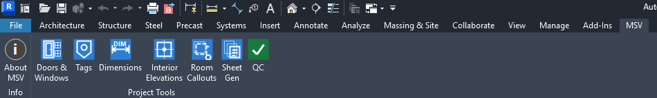
Every tool on this page lives under the MSV tab in Revit's ribbon.
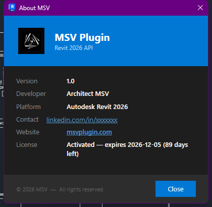
Click About MSV any time to check your version and license status.
Installing MSV
MSV installs as a single setup file that detects which Revit versions you have and lets you choose which ones to add the plugin to.
Select components
On the Select Components screen, MSV auto-detects which Revit versions (2024–2027) are installed and pre-checks each one it finds.
Confirm & install
Uncheck any version you don't want the plugin added to, then continue through the wizard — no restart or admin rights needed.
Launch Revit
Open Revit and you'll see a new MSV tab in the ribbon — with just About MSV on it until you activate the plugin.
Unlocking the plugin on your machine
MSV uses a simple, offline, per-machine license — there's no account to log into and no internet connection needed to activate.
Until a machine is activated, the ribbon only shows About MSV — the seven Project Tools stay hidden. Here's how to unlock them:
- Click MSV → About MSV.
- Copy the Machine ID shown in the dialog and send it to MSV support.
- MSV support sends back an activation code, valid for the term you purchased (e.g. 365 days for 1 year).
- Paste that code into Enter your activation code and click Activate.
- Restart Revit — the Project Tools panel only appears after a restart, even though the license itself takes effect immediately.
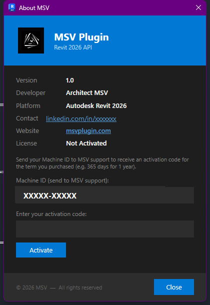
The License row reads Not Activated, and the dialog grows two extra fields: your Machine ID (read-only, to send to support) and a box to paste the code you get back.
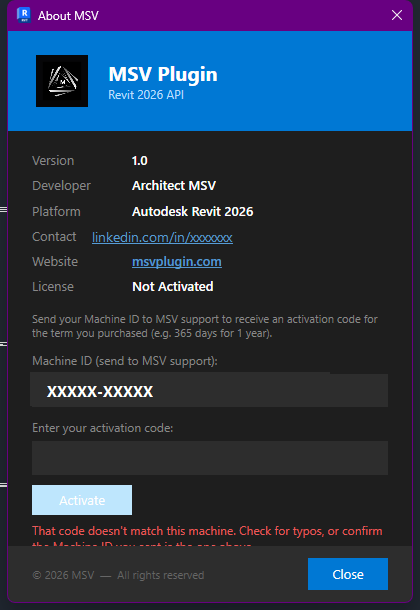
A code that doesn't match this machine's ID (or has a typo) shows a plain error instead of activating — it never silently fails.
The license itself is entirely offline: the activation code has your machine's ID and an expiry date baked into it (cryptographically signed), so checking it needs no server call. Once activated, About MSV shows the license as Activated — expires <date> (N days left); after that date it switches to Expired and the Project Tools panel disappears again until you activate a fresh code.
Doors & Windows
See and manage every door and window in the model from one panel.
- Click MSV → Doors & Windows.
- The panel opens showing live counts for Doors and Windows — Existing, New Construction, Demolished and Total — and a full list below, filterable by Level, Category and Phase.
- Click any row to select it, then use Find in View, Select Existing, Select New or Select Demolished to jump straight to it — or change its Phase Created and click Apply.
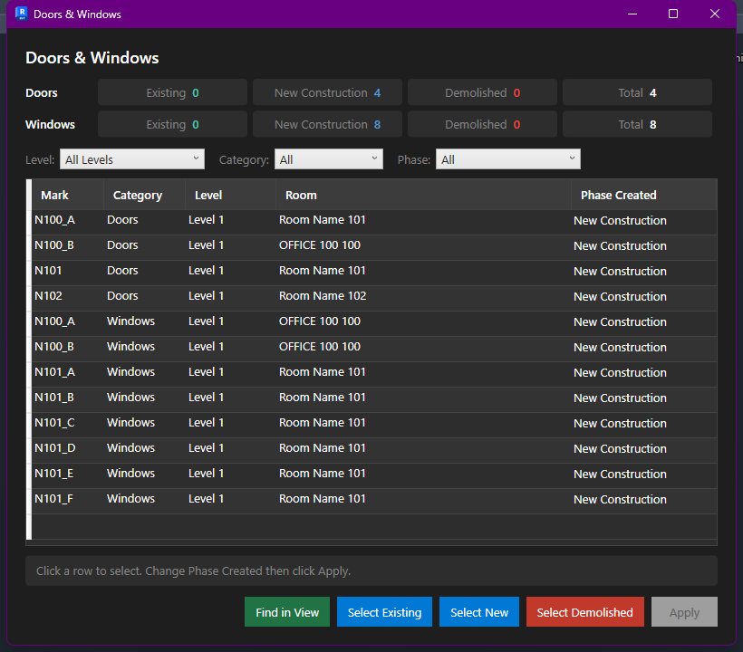
Dimensions
Draw wall and grid dimension strings, wall end to each opening to wall end.
The dialog is modeless — it stays open while you work in Revit (minimize it or press Esc to close), and only ever needs an active floor plan view.
- Click MSV → Dimensions to open Auto Dimensions.
- Under 1. Drawing, set the Style and Where (which view to read walls and rooms from — usually Active view).
- Under 2. Outside the Building, tick which layers to stack: Openings (doors & windows), Walls, Overall, Grids — and set Openings measure to Jambs or Centrelines.
- Under 3. Inside Rooms, tick Room dimensions if you also want interior finish-face chains.
- Under 4. Spacing, set First string and Gap between in feet (leave both at 0 to let MSV space them automatically).
- Open Advanced for two more controls: Merge closer than (witness lines closer than this distance get merged) and Plan type (overrides how MSV reads wall faces and shared walls off the model, if Auto-detect guesses wrong).
- Click Preview to check without creating anything, or Generate to commit.
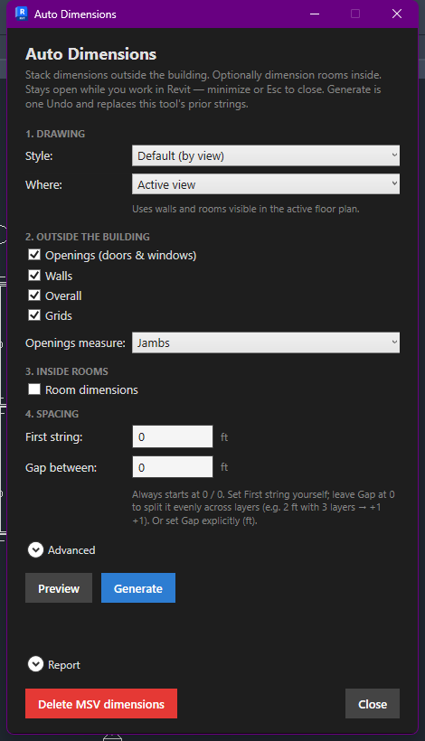
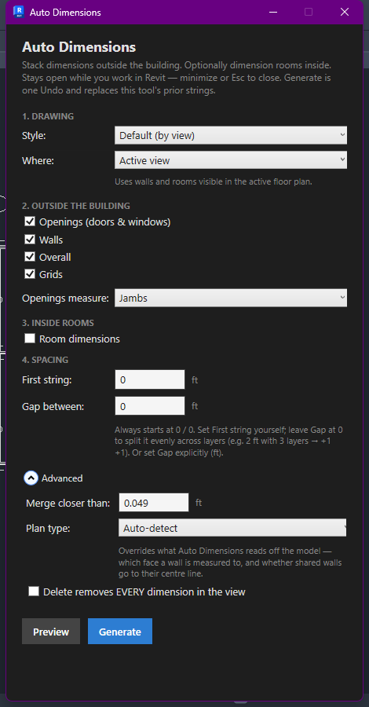
The Advanced section is collapsed by default — click it to reveal the merge tolerance and plan-type override.
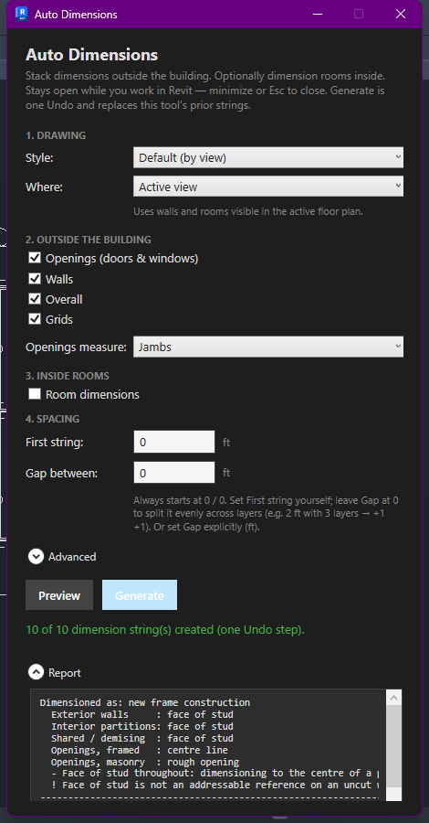
MSV reports exactly how many strings it created, and the Report section (expandable, shown here open) explains the reasoning per side — including any side it skipped and why.
The red Delete MSV dimensions button removes every dimension this tool previously created in the view — check Delete removes EVERY dimension in the view under Advanced first if you want it to remove all dimensions, not just MSV's own.
Interior Elevations
Create the four interior elevations for a room, finish face to finish face.
- Click MSV → Interior Elevations.
- Click the Rooms dropdown and tick the room(s) you want — or click All.
- Set the Scale, and tick which Directions you need (North / East / South / West).
- Click Apply.
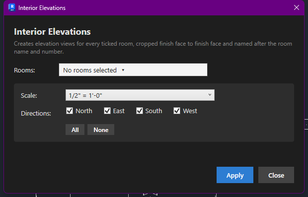
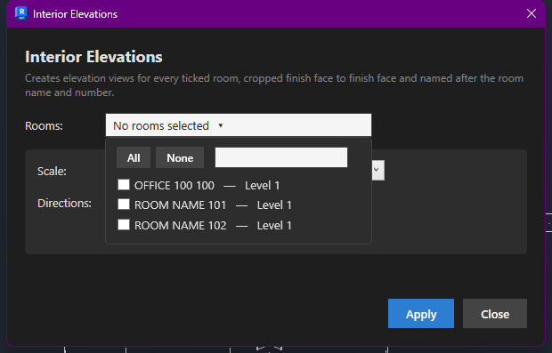
Tick individual rooms, or use the All / None shortcuts above the list.
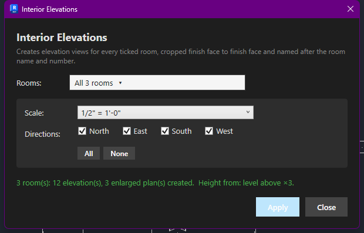
"1 room(s): 4 elevations, 1 enlarged plan(s) created." The new views appear in the Project Browser immediately.
Room Callouts
Place a callout around each room, sized to the room and named after it.
- Click MSV → Room Callouts.
- Click the Rooms dropdown, then All (or tick specific rooms).
- Draw in picks which floor plan the callout markers get drawn on — it defaults to the active floor plan and its level.
- Set the Scale for the new enlarged views, and the Margin in feet (how far the crop extends past the room boundary).
- Leave Crop to the room outline, not a rectangle checked so an L-shaped or angled room gets a callout that follows its actual shape; leave Skip rooms that already have a callout checked to avoid duplicates on a repeat run.
- Click Apply.
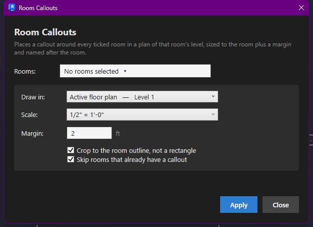
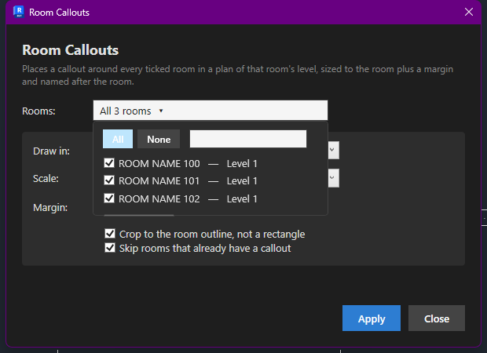
Clicking All ticks every room in the list at once.
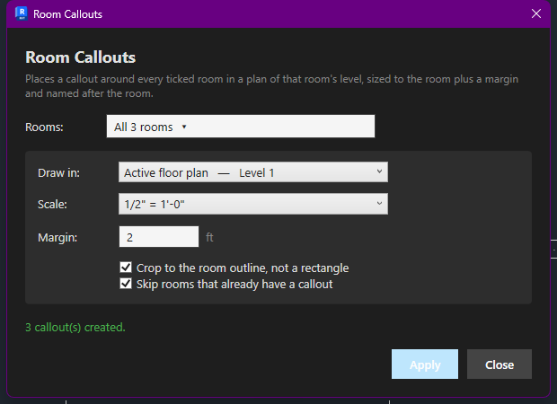
"3 callout(s) created." Each shows up in the Project Browser as ENLARGED FLOOR PLAN @ <room name>.
Sheet Gen
Replicate sheets and views per trade, then find-and-replace the numbering.
Sheet Gen has two tabs: Sheet Generation (create a batch of sheets) and Rename / Replace (find-and-replace text across sheets and views project-wide).
Sheet Generation tab
- Under 1. Select source model, leave Use My Model selected, or pick Linked model if you're generating sheets from a linked file.
- Under 2. Select title block, choose the title block type from the dropdown.
- Under 3. How many sheets?, set the count and click Build table to generate that many empty rows.
- Fill in each row's Sheet Number, Sheet Name and Discipline — or speed this up with Auto-number from row 1 (increments row 1's number down the column) or Row 1 discipline to all (copies row 1's discipline to every row). The Discipline dropdown has seven options: Architectural, Structural, Electrical, Plumbing, Mechanical, Civil, and General — each a separate entry, so a Civil sheet and a General/cover sheet are never lumped under one discipline.
- Leave Also create a sheet list grouped by discipline checked to get a ready-made schedule alongside the sheets.
- Click Create Sheets.
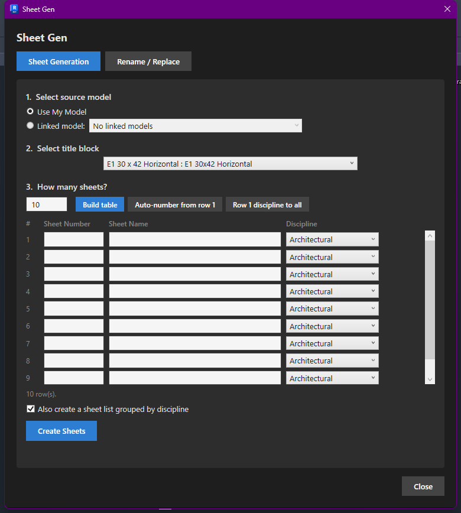
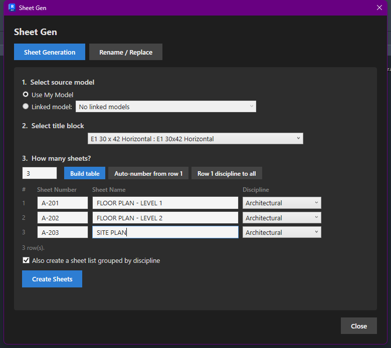
Three rows, filled in and ready to generate.
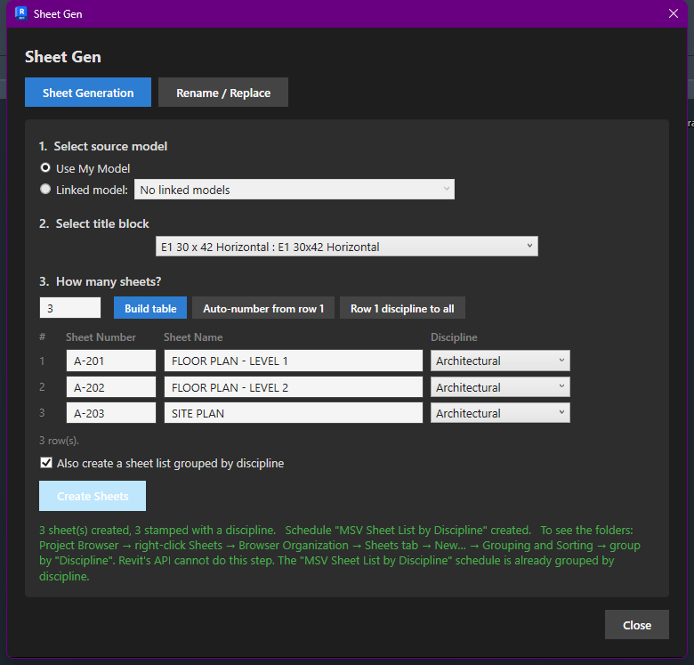
MSV confirms the sheet count, notes it stamped a discipline on each one, and tells you exactly how to group the Project Browser by discipline (a manual step — Revit's API can't automate browser organization).
Rename / Replace tab
A project-wide find & replace across sheet numbers, sheet names, and view names — useful after generating sheets if you need to bulk-adjust wording (e.g. shortening "FLOOR PLAN" to "PLAN" everywhere at once).
- Type the text to match into Find this, and its replacement into Replace with this.
- Tick which fields to search: Sheet numbers, Sheet names, View names — and Match case if the search should be case-sensitive.
- Click Preview to list every match it would change, before touching anything.
- Click Apply to make the changes.
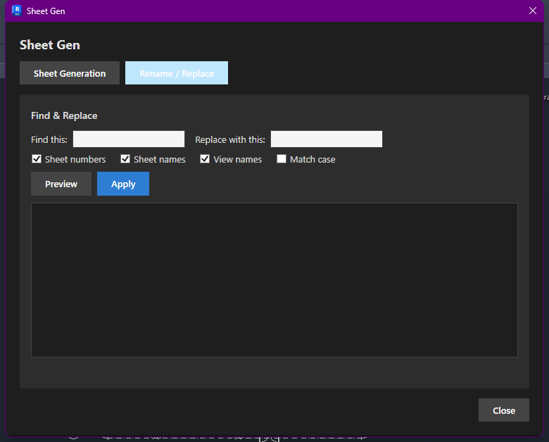
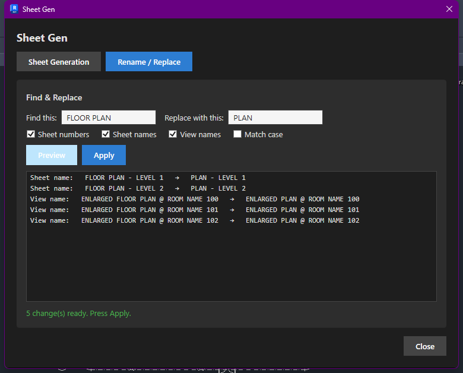
Preview lists every hit across both sheets and views before you commit — here, 5 changes ready.
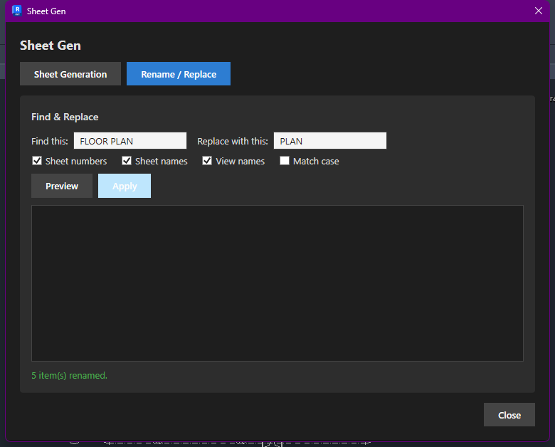
"5 item(s) renamed."
QC
Scan the documentation for issues before you issue a set.
- Click MSV → QC.
- Click Sheets and either tick Active view only, or tick specific sheets to check — the sheet-tag checks below only look at views actually placed on a sheet, so a scope of one or more sheets is what to use before issuing a set.
- Tick which of the 12 checks to run (see the full list below), or click All / None / Invert to select them faster.
- Click Run QC.
- Use the Show dropdown to filter the results down to one specific check.
- Click any row to select that element in the model, or use Open View to jump to it, or Select All Shown to select every currently-listed element at once.
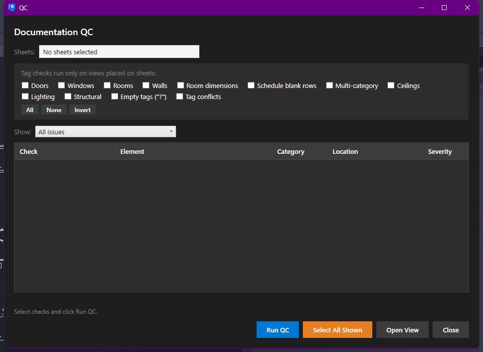
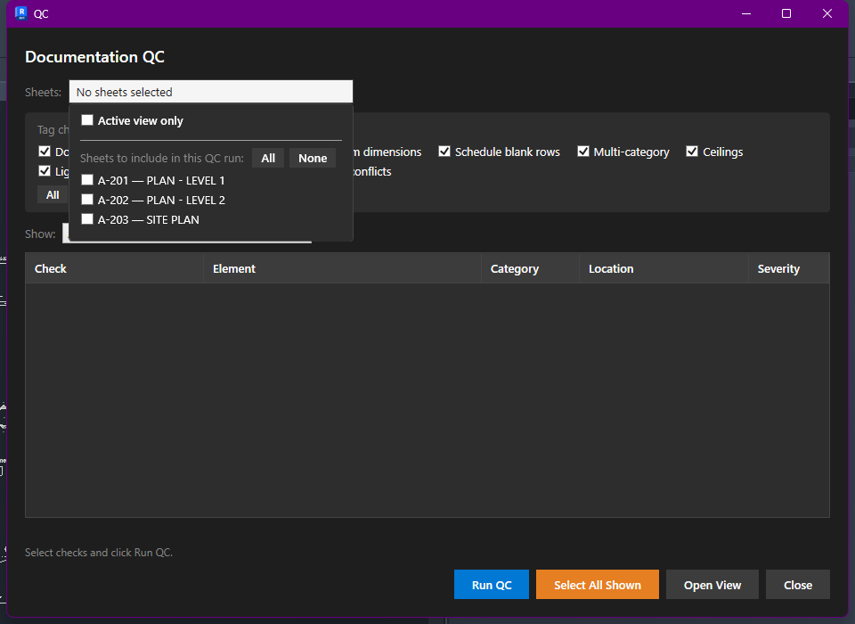
No views are checked until you pick a scope here — a sheet, several sheets, or the active view.
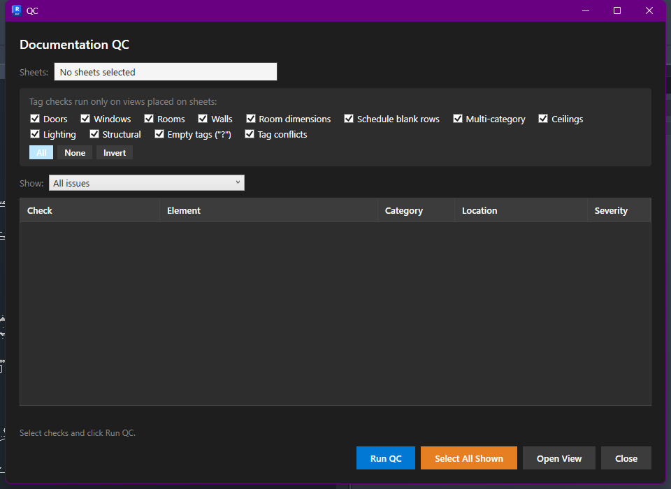
All 12 checks ticked via the All shortcut — see what each one actually looks for below.
What each check looks for
| Check | Flags an issue when… |
|---|---|
| Doors | a door in scope has no tag referencing it. |
| Windows | a window in scope has no tag referencing it. |
| Rooms | a placed room in scope has no room tag. |
| Walls | a wall in scope has no tag referencing it. |
| Ceilings | a ceiling in scope has no tag. |
| Lighting | a lighting fixture in scope has no tag. |
| Structural | a structural framing member, column, or foundation has no tag. |
| Multi-category | a furniture, casework, or specialty equipment element has no tag. |
| Empty tags ("?") | a tag (of any category) is displaying "?" or no text — it exists, but shows nothing useful. |
| Tag conflicts | a tag visually overlaps another tag, other annotation, or the model linework beneath it — anywhere it would be unreadable on a printed sheet. |
| Room dimensions | a placed room isn't referenced by any dimension in that view. |
| Schedule blank rows | a schedule placed on one of the scoped sheets has an empty row in its body. |
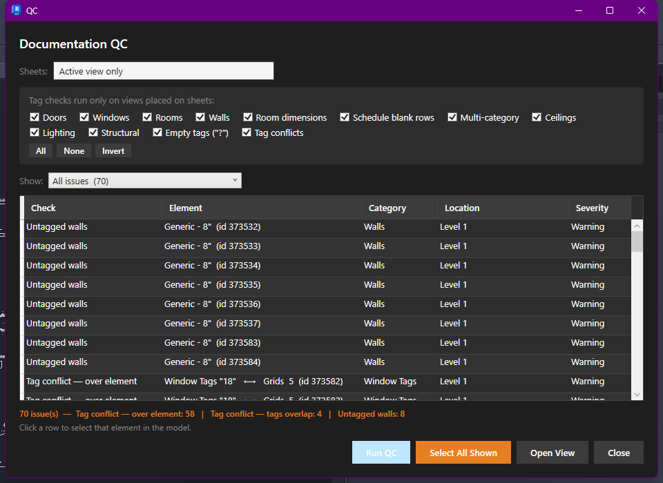
Every issue lists its Check, Element, Category, Location and Severity. The summary line under the table breaks the total down by check — here, 70 issues: 58 tag conflicts (over element), 4 tag conflicts (tags overlap), and 8 untagged walls.
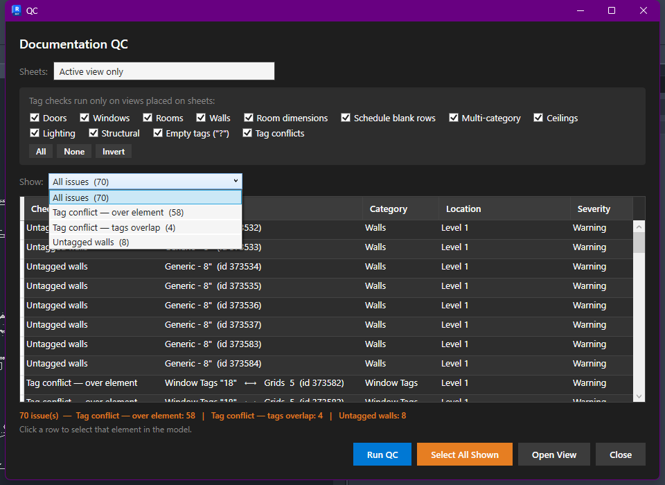
The Show dropdown lists only the checks that actually found something, each with its own count — pick one to filter the table down to just that issue type.
Supported Revit Versions
One installer covers every supported year. The installer automatically picks the correct build for your exact Revit update — you don't need to know which one to choose.
| Revit Version | Status | Notes |
|---|---|---|
| 2024 | Supported | .NET Framework build |
| 2025 | Supported | Auto-detects .NET 8 vs .NET 10 builds (split at 2025.5) |
| 2026 | Supported | Auto-detects .NET 8 vs .NET 10 builds (split at 2026.5) |
| 2027 | Supported | .NET 10 build |
FAQ & Support
The installer shows "Unknown Publisher" — is this safe?
Yes. The plugin isn't yet code-signed with a commercial certificate, which is what triggers that Windows warning. It doesn't affect how the plugin runs.
Which Revit versions does MSV support?
2024 through 2027 — see the table above. The installer only offers the versions it finds installed on your machine.
Something isn't working — how do I get help?
Send your Revit version and what happened, and I'll take a look.